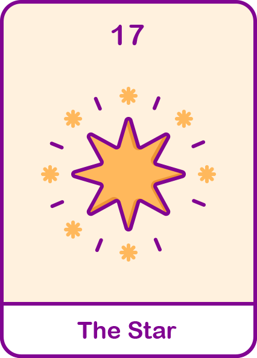

별
자신을 드러내는데 있어 매우 적극적이고 열정적입니다.
말 주변과 센스가 넘치고, 사람들과 소통시 즐거움을 줍니다.

#적극적
#열정적
#즐거윰
현대해상
내 성격 타로카드 해석은?
정방향 해석
- 긍정적이고 사교적이며 화려함을 추구해 나를 드러내는데 매우 적극적입니다.
- 늘 자유롭고 계획없이 언제든지 즉흥적으로 떠날 수 있는 사람입니다.
- 성격이 좋아서 주위에 늘 사람들이 많고 낯선 사람과도 금방 친해지며 자존감이 높아요.
- 성격이 단순해 하고 싶은거 다하고 걱정되는 일이 있어도 잊으려고 해요.
역방향 해석
- 계획이 없고 내가 하고 싶은 것만 하려고 하다보니 책임감이 조금 부족해요.
- 감정기복이 심하고 좋고 싫음이 얼굴에 다 티나요.
- 충동구매를 잘하고 성격이 급하다 보니 마무리가 완벽하지 못해요.
- 집중력 시간이 짧고 일을 뒤로 미루다가 한번에 끝내버려요.
재미로 보는
내 타로카드의 재물운은?
금전적으로 충족함을 의미하는 카드입니다!
주변 사람들을 위해 사용한다면 그 기운을 더 오랜기간 동안 유지할 수 있어요!
하지만 불필요한 작은 지출이 쌓여 큰 지출이 될 확률이 높아요!
또한 주변 사람에게 돈을 빌려준다면 제 때 돌려 받지 못할 수도 있습니다.
나를 위한 투자, 유흥비, 소비도 좋지만 미래의 나를 위한 저축이 필요합니다!
주변 사람들을 위해 사용한다면 그 기운을 더 오랜기간 동안 유지할 수 있어요!
하지만 불필요한 작은 지출이 쌓여 큰 지출이 될 확률이 높아요!
또한 주변 사람에게 돈을 빌려준다면 제 때 돌려 받지 못할 수도 있습니다.
나를 위한 투자, 유흥비, 소비도 좋지만 미래의 나를 위한 저축이 필요합니다!
보험 컨디션도 체크해보기! 가입한 보험을 확인하고
부족한 부분을 채워 보세요 현대해상